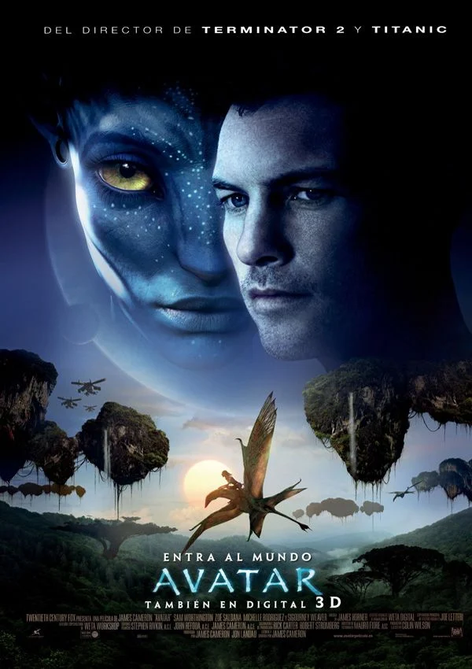

Semana de películas de ciencia ficción. Para empezar con todo esta sección temática, elegí mirar una saga que ya se ganó su lugar entre los clásicos de hoy en día de los adolescentes: Los Juegos del Hambre. Y sí, la volví a ver entera. Otra vez. Y otra vez volví a quedarme con la piel de gallina en la escena final. Definitivamente: 10/10 estrellas. Aunque técnicamente se trata de una distopía, la elijo para esta semana porque justamente nos muestra un mundo supuestamente "ordenado", pero construido sobre el miedo, la opresión y el espectáculo del sufrimiento. Panem no es un lugar al que uno quiera ir... pero tampoco podés dejar de mirar. Lo que más me gusta de esta saga —y lo que me sigue atrapando cada vez que la veo— es cómo logra que te conectes profundamente con los personajes. Katniss no es la heroína perfecta ni quiere serlo, y eso la hace mucho más real. Hay momentos donde uno quiere meterse en la pantalla, acompañarla, proteger a Prim, pelear contra el Capitolio o abrazar a Peeta después de todo lo que le pasa.
Absolutamente. Tanto si ya la viste y querés volver a sentir todo de nuevo, como si todavía no le diste una oportunidad.

Semana de películas de fantasía: Avatar: El Camino del Agua Esta semana me sumergí (literalmente) en el mundo fantástico de Avatar: El Camino del Agua, la segunda entrega de la épica saga de James Cameron. Si la primera ya fue impresionante, esta película logra superarla en muchos aspectos, especialmente en lo visual. Lo que más me impactó fueron los efectos especiales. Es increíble cómo te transporta a Pandora desde el primer minuto: los colores, las criaturas, los paisajes submarinos… todo está tan bien logrado que las casi tres horas de duración se sienten como un viaje a otro mundo. Es una experiencia inmersiva, y por eso te recomiendo muchísimo verla en el cinesi todavía está en cartelera. Vale cada segundo. Pero El Camino del Agua no es solo una película visualmente espectacular. Esta entrega profundiza mucho más en la dinámica familiar de Jake, Neytiri y sus hijos, mostrándonos cómo enfrentan juntos los desafíos de un nuevo entorno, las amenazas externas y los conflictos internos. Hay acción, sí, pero también hay momentos muy emotivos que exploran el amor, la pérdida, el crecimiento y el sentido de pertenencia.
¡Totalmente! Tanto para los que son fans de la primera como para quienes buscan una buena película de fantasía con corazón. Es una historia que mezcla aventura, emoción y un mensaje ecológico muy potente.
Podes chusmear todos los increibles actores que aparecen en estas peliculas en el siguiente link: pagina de actores